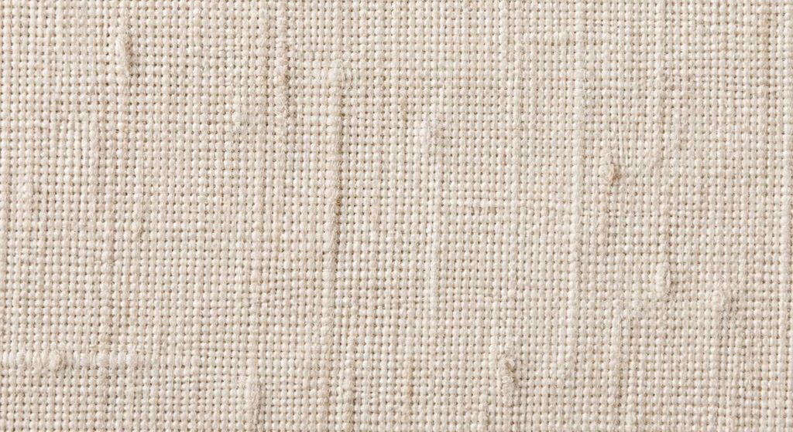
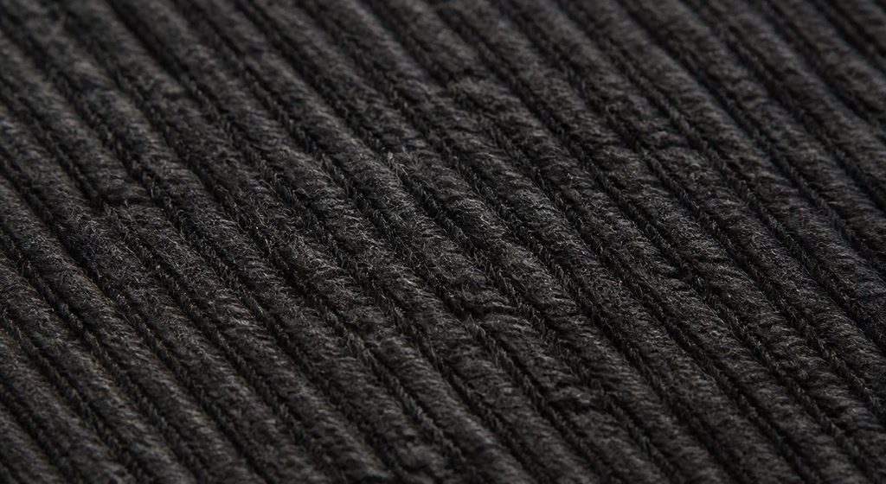

MARNE · Collection notes
Eleven pieces in four cloths, none of them dyed. Delivery from July, order book closes 2027.04.30.
The whole collection is the colour the fibre arrives in. Undyed linen, undyed wool in two natural fleece shades, and a charcoal that is the sheep rather than the vat.
This is a constraint, not a story we tell after the fact: it removes the wettest and most polluting step from the chain, and it puts a ceiling on what the range can look like. Four cloths, eleven pieces, and no piece that depends on a colour to work.
What it costs the buyer is repeatability. Fleece varies by flock and by year, so the charcoal in July will not be exactly the charcoal in November — the tolerance is stated below and it is wider than a dyed programme. What it buys is a rail that reads as one thing from across a shop floor.

Cloth study — generated, not a swatchL1 · Undyed linen, 240 gsm
Plain weave, wet-spun flax, Normandy. Slub is inherent and is not a fault. Softens for about thirty washes and then stops.

Cloth study — generated, not a swatchW2 · Charcoal wool twill, 380 gsm
Undyed fleece from a single Hebridean flock. Shade tolerance ±1 grade against the July standard; a wider tolerance than a dyed cloth, stated up front.
The other two cloths — W1 oatmeal wool, 320 gsm, and L2 heavy linen canvas, 410 gsm — are held at the showroom. Swatch cards go out with every confirmed order, and a card is the only thing to approve a shade against. Nothing here is a swatch.
| Code | Piece | Cloth | Sizes | Wholesale |
|---|---|---|---|---|
| A-01 | Overshirt | W1 | 1–5 | 124.00 |
| A-02 | Wide trouser | W1 | 1–5 | 138.00 |
| A-03 | Long coat | W2 | 2–5 | 315.00 |
| A-04 | Field jacket | L2 | 1–5 | 186.00 |
| A-05 | Collarless shirt | L1 | 1–5 | 96.00 |
| A-06 | Shift dress | L1 | 1–4 | 142.00 |
| A-07 | Apron skirt | L2 | 1–4 | 118.00 |
Four further pieces (A-08 to A-11, accessories in L1 and W2 offcuts) are shown in the showroom only and are not open to pre-order.
We cut to the order book and hold no stock, so a late order is a later delivery rather than a shortage. If a flock comes in short we will tell you before we cut, and you may take the shade as it falls or cancel the style.